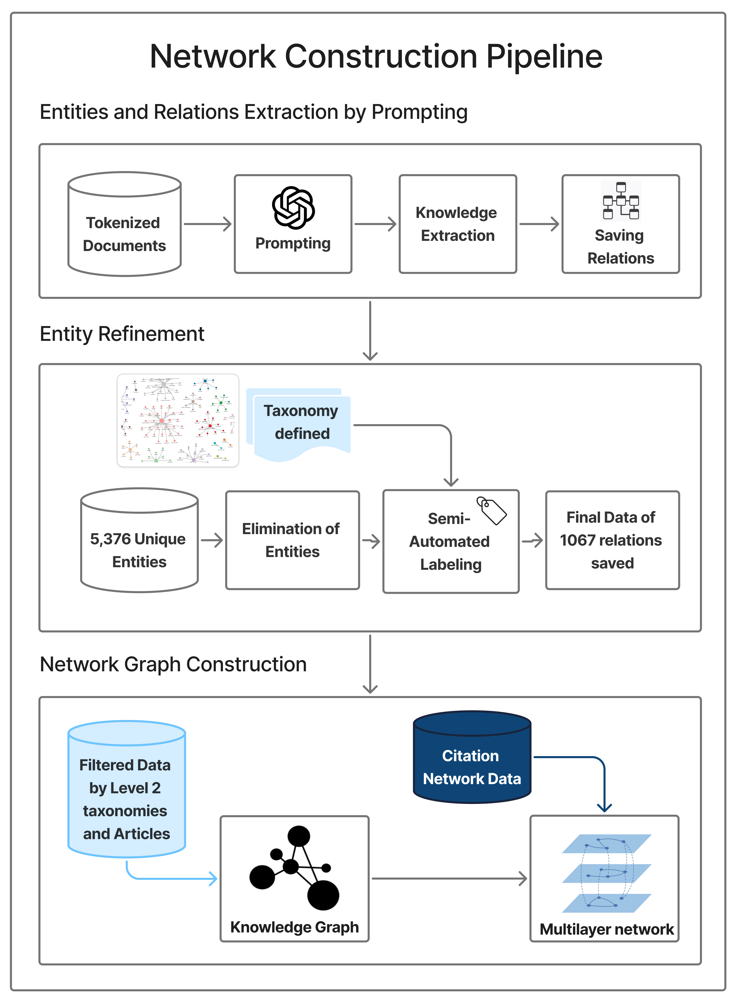
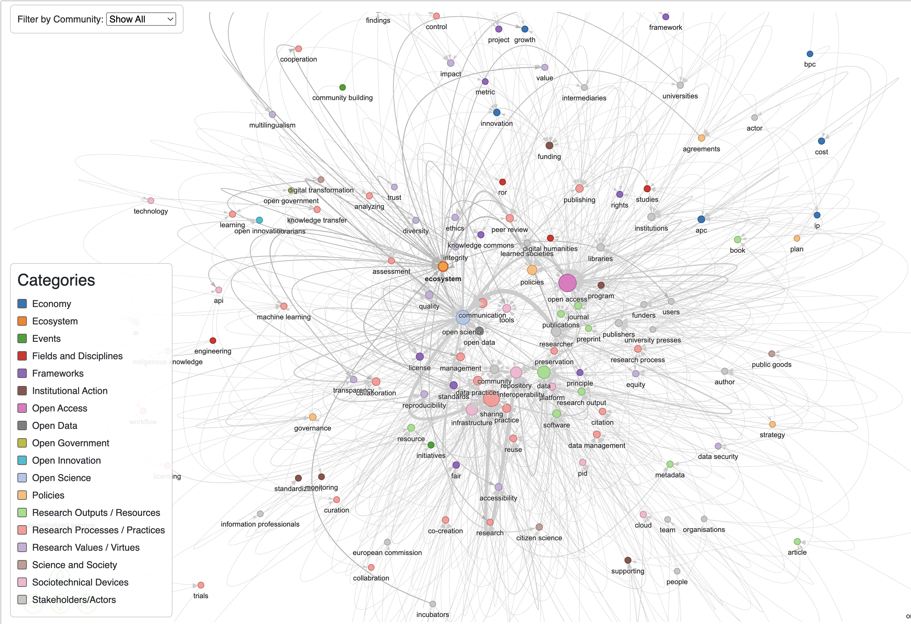
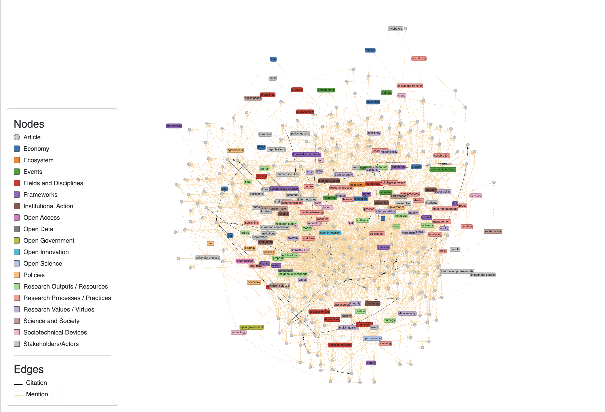
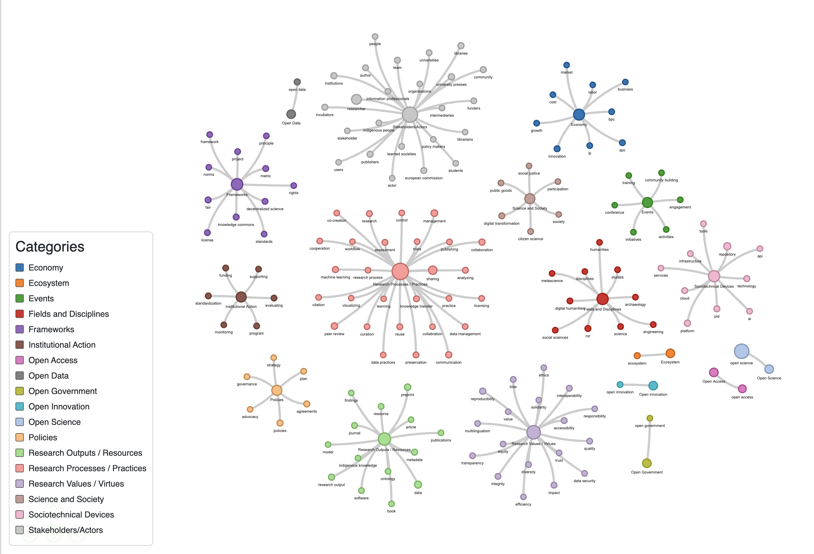

This page presents an interactive, story-driven view of our research on how the term "ecosystem" is used in Open Science discourse.
All scripts, HTML files, data, and interactive visualizations used in this project are openly available on our GitHub repository:
Ecological Metaphors in Open Science.
The term "ecosystem" is frequently used to describe various concepts, not only in open science but also in broader discussions of research and innovation. Despite its widespread use, it is rarely explicitly defined, often functioning as a boundary object that facilitates communication across diverse communities. Systematically documenting its varied, context-dependent meanings presents a significant challenge. This work in progress explores the term "ecosystem" within the discourse of Open Science, offering a systematic approach to mapping its varied meanings and uses.
We pose a twofold research question: from a social scientific perspective, how can the diverse uses of "ecosystem" be systematically documented? And from a methodological standpoint, how can computational techniques be leveraged to trace such a boundary object?
Drawing on a curated corpus of 211 scholarly articles and exploratory ontological work, we use LLMs to construct a detailed knowledge graph, yielding 1,067 semantic relations. This graph is then integrated with a citation network to create a multilayer model for analyzing the term’s dissemination. Our preliminary results identify seven distinct, data-driven thematic communities. Although the application of knowledge graphs is now an emerging practice, our pipeline offers a novel application for revealing the term’s underlying meanings.
By mapping its surrounding ontology, this ongoing work suggests how such a term allows knowledge to circulate between different scholarly communities, providing deeper insight into the conceptual landscape shaping the digital transition of research.
Our initial dataset was built by querying the OpenAlex database using combinations of phrases such as "open science ecosystem", "ecosystem in open access", and others. After cleaning, 211 scholarly articles remained for analysis.
View Query on OpenAlexWe used GPT-based prompt engineering to extract entity-relation triples centered on the term ecosystem. These were converted into a semantic knowledge graph using NetworkX and Pyvis. Nodes were labeled with a manually refined two-level taxonomy.
The semantic network was further enriched with a citation network, forming a multilayer model that maps both concepts and communities of scholarship.

Our results demonstrate that the term ecosystem acts as a boundary object, linking diverse thematic communities in Open Science. In particular, Community 5 shows its use in techno-economic discourse (e.g., "machine learning", "digital transformation"), whereas Community 4 aligns it with policy and governance contexts. These communities frame different priorities through the same term, confirming its flexible communicative function.
Our semantic and multilayer network visualizations validate the centrality of core terms like open science, sharing, and repository, while also revealing the bridging function of ecosystem as a node with high betweenness centrality. These patterns support our central thesis: ecosystem is not just a metaphor, but an active, structural mediator in the scholarly landscape.



The table below shows the finalized two-level thematic taxonomy used to label nodes in the semantic network. It includes 18 main categories and their corresponding sub-categories extracted and grouped manually after entity cleaning and standardization.
| Main Category | Sub-categories (in lowercase) |
|---|---|
| Economy | apc, bpc, business, cost, growth, ip, labor, market, innovation |
| Ecosystem | ecosystem |
| Events | activities, community building, conference, engagement, initiatives, training |
| Fields and Disciplines | archaeology, digital humanities, disciplines, engineering, humanities, metascience, ror, social sciences, studies, science |
| Frameworks | fair, framework, license, metric, norms, principle, project, rights, standards, knowledge commons, decentralized science |
| Institutional Action | evaluating, funding, monitoring, program, standardization, supporting |
| Open Access | open access |
| Open Data | open data |
| Open Government | open government |
| Open Innovation | open innovation |
| Open Science | open science |
| Policies | advocacy, agreements, governance, plan, policies, strategy |
| Research Outputs / Resources | article, book, citation, data, indigenous knowledge, journal, metadata, model, ontology, preprint, publications, research output, resource, software, findings |
| Research Processes / Practices | analyzing, assessment, citation, co-creation, collaboration, communication, control, cooperation, curation, data management, data practices, knowledge transfer, learning, licensing, machine learning, management, peer review, practice, preservation, publishing, research, research process, reuse, sharing, trials, visualizing, workflow |
| Research Values / Virtues | accessibility, bias, data security, diversity, efficiency, equity, ethics, fair, impact, integrity, interoperability, multilingualism, quality, reproducibility, responsibility, solidarity, transparency, trust, value |
| Science and Society | citizen science, participation, social justice, society, public goods, digital transformation |
| Sociotechnical Devices | ai, api, cloud, infrastructure, pid, platform, publications, repository, services, software, technology, tools |
| Stakeholders/Actors | actor, author, community, european commission, funders, incubators, indigenous people, information professionals, institutions, intermediaries, learned societies, librarians, libraries, organisations, people, policy makers, publishers, researcher, stakeholder, students, team, universities, university presses, users |
The following is the full prompt provided to the GPT-3.5 Turbo model for the extraction of entities and relations from the text chunks. It was specifically designed to extract only meaningful concepts and semantic relationships centered around the word "ecosystem".
You are an expert in knowledge extraction.
Your task:
- Focus ONLY on text where the word "ecosystem" appears.
- From those parts, extract meaningful, well-formed entities (as nodes)
and their relationships (as triples).
Guidelines:
- Include any terms that directly contain the word "ecosystem"
(e.g., "Open Science Ecosystem", "Blockchain Ecosystem") as part
of the concept list.
- Only include entities that are concrete or conceptual — no vague
or generic entries.
- Limit to a maximum of 20 concepts and maximum of 20 relations.
- It is perfectly fine if there are fewer than 20 concepts or
relations, depending on the richness of the information.
- Do NOT invent or hallucinate content that is not explicitly or
implicitly supported by the text.
- Prioritize clarity, importance, and relevance.
- Avoid very long phrases (keep concept labels under 6-7 words).
- For relations, avoid generic verbs like "is", "are", or
conjugated forms like "includes". Use meaningful, specific verbs
(e.g., "participate in", "enable", "comprise").
Output Format (strictly):
Return a valid JSON object with exactly these two keys:
- "concepts": a list of important concept strings
- "relations": a list of [subject, relation, object] triples
Example:
{
"concepts": ["Open Science Ecosystem", "Repositories",
"Researchers", "Knowledge Sharing"],
"relations": [
["Researchers", "participate in", "Open Science Ecosystem"],
["Repositories", "enable", "Knowledge Sharing"]
]
}
Strict instructions:
- Only return the JSON object — no explanations, commentary, or
extra text.
- Do not repeat terms unnecessarily.
- Ensure that the JSON is valid (no missing commas, brackets, or
quotation marks).